227 — Cost Management, Advisor, resiliencia y Chaos Studio
Parte: 18 — Azure: arquitectura empresarial y operación en producción
Nivel: avanzado · Horas estimadas: 4
Laboratorio: finops · Estado: EXECUTABLE_CORE
🎯 Propósito
Cerrar la operación de Azure con las dos cosas que se dejan para el final y deciden si el sistema es sostenible: el control del coste y la comprobación de la resiliencia. La clase aplica el método de la clase 214 con las herramientas de esta nube, evalúa las recomendaciones automáticas con escepticismo —el asesor propone reservas sobre cargas que había que retirar—, y usa la inyección controlada de fallos para comprobar lo que la clase 215 exige comprobar.
📚 Resultados de aprendizaje
Al finalizar podrás:
- Atribuir el coste con etiquetas impuestas en la creación.
- Evaluar las recomendaciones automáticas antes de aplicarlas.
- Comprometer capacidad solo sobre la base estable y vigilar su uso.
- Inyectar fallos de forma controlada para comprobar la resiliencia.
- Cerrar el ciclo: cada hallazgo, una acción con dueño y fecha.
🧩 Conceptos centrales
| Concepto | Comprensión verificable |
|---|---|
ámbito de facturación |
Nivel al que se agrega el gasto: cuenta de facturación, perfil, sección y suscripción. |
etiqueta heredada |
Etiqueta que se propaga del grupo de recursos al recurso. No todos los servicios la respetan. |
reserva de capacidad |
Compromiso de uso a uno o tres años a cambio de descuento. Se aplica a la base estable. |
plan de ahorro |
Compromiso de gasto por hora, más flexible que la reserva y con menos descuento. |
experimento de caos |
Inyección controlada de un fallo, con hipótesis, alcance limitado y forma de parar. |
recomendación automática |
Sugerencia de la plataforma sobre coste, fiabilidad o rendimiento. Se evalúa, no se aplica. |
🧠 Modelo mental
La arquitectura Azure nace del tenant y las políticas heredables, y llega al workload mediante identidades administradas y redes privadas.
Aplicado a esta clase, separa siempre cuatro planos: intención (qué necesita el usuario), configuración (qué declaramos), estado observado (qué existe de verdad) y evidencia (cómo sabemos que cumple). Confundirlos produce diseños que se ven correctos en un diagrama pero fallan al operar.
🗺️ Flujo de razonamiento

📖 Desarrollo
1. Atribuir el coste en esta nube
El método es el de la clase 214 y aquí hay particularidades que hay que conocer.
LA JERARQUÍA DE FACTURACIÓN
cuenta de facturación → perfil → sección → suscripción
→ el gasto se agrega por ahí, y por eso la separación
por suscripción de la clase 217 es también una
decisión de facturación
LAS ETIQUETAS
obligatorias en la creación, con valores cerrados, por
política clase 217
→ y la herencia del grupo de recursos NO la respetan
todos los servicios
→ hay que comprobar cuáles, y para esos, etiquetar el
recurso directamente
Y el gasto que no se puede etiquetar, que aquí es apreciable:
transferencia entre zonas y regiones
servicios compartidos: centro de red, cortafuegos,
resolutor, área de observabilidad
y los recursos gestionados por la plataforma
→ se reparten por regla escrita y acordada
→ y hay que decir cuánto se reparte y con qué criterio
clase 214
Las cinco vistas de la clase 214, con lo que suele aparecer en Azure:
POR SERVICIO el 80 % en 3 o 4 líneas
POR DUEÑO y cuánto no lo tiene
POR ENTORNO preproducción por encima del 25 % de
producción es señal
POR TIPO DE USO dentro de cada servicio grande
POR UNIDAD DE
NEGOCIO la única cifra comparable
y las partidas que sorprenden en esta nube
unidades de petición de la base distribuida clase 223
ingesta de observabilidad y de seguridad clases 225, 226
puntos privados e inspección del cortafuegos clase 219
transferencia entre zonas
y los planes de servicio con instancias encendidas y sin
tráfico clase 221
Y los presupuestos con acción, igual que antes:
por suscripción y por servicio, sobre previsión
en entornos no productivos, con acción real
en producción, solo aviso
y detección de anomalías por servicio y por dueño
clase 214
2. Las recomendaciones automáticas, con escepticismo
La plataforma propone mejoras de coste, fiabilidad, rendimiento y seguridad. Son útiles y no se aplican sin evaluar.
LAS DE COSTE, y su trampa
«compra una reserva para estas máquinas»
→ calcula el ahorro suponiendo que ESAS máquinas seguirán
existiendo tres años
→ y no sabe que estaban en la lista de retirada
→ comprometerse con lo que hay que apagar es la peor
compra posible ley 25
«redimensiona esta máquina infrautilizada»
→ mira el uso medio, no el pico ni la estacionalidad
→ hay que comprobar el percentil alto antes clase 212
«retira este recurso ocioso»
→ suele ser correcta, y aun así: apagar antes de borrar
clase 214
Y el orden correcto, que evita comprar lo que hay que tirar:
1 RETIRAR lo que no se usa
2 REDIMENSIONAR lo sobredimensionado
3 APAGAR por horario lo no productivo
4 Y SOLO ENTONCES comprometer capacidad
→ comprometer primero congela el desperdicio durante años
Los compromisos, con la decisión entre los dos tipos:
RESERVA DE CAPACIDAD
se compromete un tipo y tamaño concreto
+ descuento mayor
− rígida: si se cambia de familia, el descuento se pierde
o hay que intercambiarla
PLAN DE AHORRO
se compromete un gasto por hora
+ flexible: se aplica a lo que haya
− descuento menor
CRITERIO
infraestructura estable y previsible → reserva
cargas que van a cambiar de forma → plan de ahorro
y en ambos casos, SOLO sobre la base estable medida con
meses de histórico clase 143
Y lo que hay que vigilar después:
COBERTURA qué proporción del uso está cubierta
UTILIZACIÓN qué proporción de lo comprometido se usa
→ por debajo del 95 %, es dinero tirado
→ y baja sola cuando se apaga algo o se cambia de
familia
→ alerta si la utilización cae por debajo del umbral
→ y revisión antes de cada renovación
Y las recomendaciones de fiabilidad, que merecen más atención que las de coste:
«esta base no tiene redundancia de zona»
«este recurso no tiene copias de seguridad»
«esta configuración no sobrevive a la pérdida de una zona»
→ estas se leen con la aritmética de la clase 185: ¿cambian
el techo de disponibilidad del flujo crítico?
→ y si sí, se aplican; si no, se aceptan por escrito
3. Inyectar fallos de forma controlada
La clase 215 exige comprobar la resiliencia. La inyección controlada de fallos es la forma de hacerlo sin esperar a un incidente.
QUÉ PERMITE INYECTAR
apagar o reiniciar máquinas y nodos
presión de CPU, memoria o disco
latencia y pérdida en la red
bloqueo del acceso a un servicio dependiente
conmutación forzada de una base
caída de una zona completa
y fallos de una dependencia de la plataforma
Y la disciplina, que es la de la clase 215:
HIPÓTESIS ESCRITA, antes
«al perder una zona, el flujo de compra seguirá
funcionando con latencia menor de 600 ms y sin errores;
la búsqueda quedará degradada»
→ lo valioso es dónde falla la hipótesis
ALCANCE LIMITADO
un porcentaje de instancias, una zona, un servicio
→ y el experimento debe poder pararse en segundos
VENTANA Y OBSERVACIÓN
con negocio avisado y con alguien tomando notas
→ y con tráfico real, no de madrugada la primera vez
ESCALA
1 en papel: recorrer el procedimiento
2 en preproducción
3 en producción con alcance pequeño
4 en producción completo
Los experimentos que más encuentran, por orden:
1 PÉRDIDA DE UNA ZONA
→ comprueba que las réplicas están repartidas de verdad
→ y que la capacidad restante aguanta clases 185, 212
2 DEPENDENCIA QUE RESPONDE LENTO, no que cae
→ el fallo gris; la mayoría de los diseños no lo
resisten clase 185
→ y es donde se descubre que una dependencia declarada
blanda es dura clase 201
3 CONMUTACIÓN DE BASE DE DATOS
→ cronometra y mide la pérdida real clase 223
4 PRESIÓN DE RECURSOS
→ descubre límites de memoria mal puestos clase 213
5 PÉRDIDA DE UN SERVICIO DE PLATAFORMA
→ el almacén de secretos, el resolutor, el registro de
imágenes
→ y estos son los que nadie prueba y los que paran todo
clase 215
Y la disciplina posterior, que es lo que hace útil el ejercicio:
cada hallazgo → una acción con dueño y fecha
el procedimiento se corrige EN EL MOMENTO
y el experimento se repite hasta que pase entero
→ un experimento que encuentra problemas y no se repite ha
servido para la mitad clase 215
Y una advertencia sobre el permiso y el alcance:
la herramienta necesita permisos para romper cosas
→ y esos permisos son peligrosos si quedan permanentes
→ elevación temporal para ejecutar experimentos
clase 218
→ y el alcance del experimento, restringido por etiqueta o
por grupo de recursos
4. Cerrar el ciclo
Coste y resiliencia comparten una propiedad: son las dos cosas que se degradan solas si nadie las mira.
EL COSTE SE DEGRADA PORQUE
se crean recursos y no se retiran ley 25
se sobredimensiona por si acaso
se acumulan entornos y copias
y nadie tiene el gasto entre sus señales
LA RESILIENCIA SE DEGRADA PORQUE
el sistema crece y las comprobaciones no clase 216
se añaden dependencias sin recalcular el techo clase 185
y los procedimientos envejecen ley 22
Y el ritmo que este programa propone:
SEMANAL
revisión de anomalías de coste abiertas
recursos ociosos detectados y retirados
MENSUAL
coste por unidad de negocio y su tendencia
cobertura y utilización de compromisos
cumplimiento de las iniciativas clase 217
TRIMESTRAL
un experimento de resiliencia, ejecutado
simulación de técnicas de ataque clase 226
prueba del acceso de emergencia clase 218
revisión de accesos
y revisión de exenciones vencidas
ANUAL
ejercicio de pérdida de región completo clase 215
y revisión de las decisiones registradas clase 190
Y las señales que dicen si el sistema está sano:
COSTE
proporción de gasto atribuido > 90 %
coste por unidad de negocio tendencia
utilización de compromisos > 95 %
recursos ociosos vivos tendencia a cero
RESILIENCIA
proporción de pruebas negativas que pasan
plazo de recuperación MEDIDO, no declarado
proporción de técnicas simuladas detectadas clase 226
y experimentos ejecutados frente a planificados
Y la lista de comprobación de la clase:
☐ las etiquetas obligatorias se imponen en la creación
☐ se comprobó qué servicios no heredan etiquetas
☐ el coste no etiquetable se reparte por regla escrita
☐ hay presupuestos con acción en entornos no productivos
☐ hay detección de anomalías por servicio y por dueño
☐ se retiró y redimensionó ANTES de comprometer capacidad
☐ los compromisos cubren solo la base estable medida
☐ se vigilan cobertura y utilización, con alerta
☐ las recomendaciones automáticas se evalúan, no se aplican
☐ las de fiabilidad se leen con la aritmética del techo
☐ hay experimentos de caos con hipótesis y forma de parar
☐ el alcance de los experimentos está restringido
☐ los permisos para inyectar fallos son temporales
☐ cada hallazgo tiene dueño y fecha, y el experimento se
repite
☐ existe un calendario semanal, mensual, trimestral y anual
Y el cierre que enlaza con la clase siguiente: con todo lo de esta parte montado, queda ponerlo junto en un sistema productivo y comprobarlo. Es la materia de la clase 228, que además cierra la parte 18.
🔬 Ejemplo trabajado
CloudShop cierra la operación de su plataforma en Azure. Lo que sigue es la reserva que casi se compra sobre máquinas que había que retirar, y el experimento de pérdida de zona que encontró seis problemas, ninguno de infraestructura.
El coste, al revisar:
total mensual 31.400 €
por servicio
base distribuida 5.740 18 %
cómputo (planes y contenedores) 4.900 16 %
observabilidad y seguridad 4.780 15 %
transferencia y red 4.210 13 %
bases relacionales 3.100 10 %
almacenamiento 2.840 9 %
resto 5.830 19 %
por dueño
atribuido 19.100 61 %
sin atribuir 12.300 39 %
Y el detalle de lo no atribuido:
transferencia y servicios compartidos 6.100
recursos sin etiqueta 3.240
→ de ellos, 1.870 € en servicios que NO HEREDAN las
etiquetas del grupo de recursos
→ el equipo creía que las heredaban todos
recursos ociosos 2.960
Y el hallazgo de la herencia:
se comprobó servicio por servicio cuáles heredan
heredan 61 %
NO heredan 39 %
· cuentas de almacenamiento en algunas operaciones
· discos creados por conjuntos de escalado
· direcciones públicas creadas automáticamente
· instantáneas y copias
corrección
política de tipo MODIFICAR que añade las etiquetas al
crear, en vez de confiar en la herencia clase 217
→ 3.240 € pasaron a estar atribuidos en 3 semanas
La reserva que no se compró.
la recomendación automática decía
«reserva a 3 años para 22 máquinas de la familia D»
ahorro estimado 4.100 €/mes
coste del compromiso 38 % del total
lo que el equipo comprobó antes de comprar
¿qué son esas 22 máquinas?
14 nodos del clúster antiguo, en la lista de retirada
del trimestre siguiente
5 máquinas del sistema heredado de facturación, con
migración planificada a 18 meses clase 223
3 máquinas de un proyecto terminado en 2024, que
nadie había apagado ley 25
→ 17 de 22 no existirían en un año
→ comprar la reserva habría congelado el desperdicio
durante tres
lo que se hizo, en el orden correcto
1 RETIRAR las 3 del proyecto terminado
y 6 más detectadas al inventariar
-1.240 €/mes
2 REDIMENSIONAR 11 máquinas con uso p95 muy por debajo
de su tamaño -680 €/mes
3 APAGAR POR HORARIO no producción
-2.100 €/mes
4 Y ENTONCES comprometer
plan de ahorro (no reserva) sobre la base estable
medida con 4 meses de histórico
motivo del plan y no la reserva: el clúster antiguo se
retira y la familia cambiará clase 143
-1.900 €/mes
ahorro total -5.920 €/mes
frente a los 4.100 € de la recomendación, y sin
comprometerse con lo que había que tirar
El experimento de pérdida de zona.
HIPÓTESIS, escrita
1 el flujo de compra seguirá funcionando
2 la latencia p99 subirá por debajo de 600 ms
3 no habrá errores para el usuario
4 la búsqueda quedará degradada, no caída
5 la recuperación al restaurar la zona será automática
ALCANCE la zona 3 de las 3, en producción, con el 30 %
del tráfico de un día normal
PARADA detener el experimento restaura en < 60 s
OBSERVACIÓN 5 personas, 1 tomando notas
EJECUCIÓN, martes 15:00
Y lo que ocurrió:
15:00:00 se corta la zona 3
15:00:12 el balanceador retira los destinos de esa zona
✓ predicción 1: el flujo sigue
15:00:40 latencia p99 410 ms
✓ predicción 2
15:01:10 aparecen errores 503 en el 3 % de las peticiones
✗ predicción 3
causa el plan de servicio tenía 6 instancias,
2 por zona; al perder 2, las 4 restantes
quedaron al 91 % de su codo clase 186
y el escalado tardó 4 minutos
→ faltaba margen para perder una zona de tres
clase 212
15:02:30 la BÚSQUEDA cayó por completo
✗ predicción 4
causa sus 3 réplicas estaban las tres en la
zona 3
el reparto entre zonas no estaba
configurado clase 213
→ y nadie lo sabía porque nunca se había perdido
una zona
15:04:00 la base distribuida siguió sirviendo
✓ (redundancia de zona activada)
15:04:20 el almacén de SECRETOS dejó de responder para 2
servicios
✗ no estaba en la hipótesis
causa esos 2 servicios cacheaban el secreto al
arrancar; las instancias nuevas no
pudieron obtenerlo porque el punto
privado del almacén estaba en la zona 3
clase 219
15:09:00 el equipo decide parar
15:09:40 zona restaurada
15:10-15:24 la recuperación NO fue automática
✗ predicción 5
2 servicios quedaron con instancias marcadas como
no sanas y hubo que reiniciarlas a mano
Los seis hallazgos:
# hallazgo tipo acción
1 sin margen para perder una zona capacidad 6 → 9
instancias
2 las 3 réplicas del buscador en la
misma zona reparto restricción
de reparto
3 punto privado del almacén de
secretos en una sola zona red 3 puntos,
uno por zona
4 2 servicios cachean el secreto y
no lo renuevan código renovación
periódica
5 recuperación no automática proceso comprobación
de salud
corregida
6 nadie sabía qué hacer al ver los
503: no había procedimiento proceso escrito y
probado
de infraestructura 0
de configuración, reparto, código y proceso 6
Y la segunda ejecución, dos meses después:
latencia p99 máxima 380 ms ✓
errores para el usuario 0 ✓
búsqueda degradada ✓
almacén de secretos disponible ✓
recuperación automática ✓
duración total del impacto 0 min
El calendario que quedó:
semanal anomalías de coste; ociosos retirados
mensual coste por pedido; cobertura y utilización;
cumplimiento de iniciativas
trimestral 1 experimento de resiliencia
simulación de técnicas de ataque clase 226
prueba de acceso de emergencia clase 218
revisión de accesos y de exenciones
anual ejercicio de pérdida de región clase 215
revisión de decisiones registradas clase 190
El resultado, seis meses después:
```text antes después coste mensual 31.400 € 23.100 € coste atribuido 61 % 94 % coste por pedido 0,071 € 0,049 € utilización del compromiso — 98 % recursos ociosos 2.960 € 0 € réplicas repartidas entre zonas parcial total experimentos ejecutados 0 3 hallazgos con dueño y fecha — 14 cerrados — 13
**La lección que esta clase deja**: la recomendación automática proponía comprometerse tres años con **veintidós máquinas de las que diecisiete no iban a existir en uno**, y hacer las cosas en el orden correcto —retirar, redimensionar, apagar, y solo entonces comprometer— dio un ahorro mayor sin atarse a nada. Y el experimento de pérdida de zona encontró seis problemas, **ninguno de infraestructura**: los tres más graves fueron réplicas mal repartidas, un punto privado en una sola zona y dos servicios que cacheaban un secreto y no lo renovaban.
## 🧪 Laboratorio guiado
Ejecuta desde la raíz:
```bash
python classes/part-18-azure-production-architecture/227-cost-management-advisor-resiliencia-y-chaos-studio/lab.py
El laboratorio selecciona el motor de práctica finops y produce
lab_result.json. El escenario, sus comprobaciones y el artefacto esperado corresponden a
esta clase; no requiere credenciales y deja explícito qué debe revalidarse en un sandbox real.
- Lee
exercise.stepsy formula una predicción antes de ejecutar. - Ejecuta la práctica y verifica todos los elementos de
checks. - Provoca el caso de
negative_testy explica la señal observada. - Materializa
azure-optimizationenevidence/usando la plantilla indicada. - Para proveedor real, sigue
sandbox.requires, registra costo y ejecutadestroy.
Evidencia esperada
El artefacto principal es un cálculo trazable con unidad, supuesto y sensibilidad. Además, la entrega debe incluir el comando ejecutado, la salida estructurada y una conclusión que no exceda lo observado.
🏆 Reto verificable
Construye azure-optimization para el caso CloudShop. Incluye una alternativa descartada,
un supuesto que pueda falsarse, una prueba de fallo y una decisión de rollback.
✅ Criterio de aceptación
- [ ]
lab.pytermina con código 0 y genera JSON válido. - [ ] La entrega conecta al menos tres requisitos con mecanismos verificables.
- [ ] Existe una prueba positiva y una prueba negativa con evidencia.
- [ ] Seguridad, costo y operación aparecen como decisiones, no como anexos.
- [ ] Se declara una limitación y una condición que obligaría a revisar el diseño.
- [ ] Otra persona puede repetir el recorrido sin conocimiento tácito.
⚠️ Errores frecuentes
| Síntoma | Causa probable | Corrección |
|---|---|---|
| Parte del gasto sigue sin atribuir pese a tener etiquetas obligatorias | Se confía en la herencia del grupo de recursos y hay servicios que no la respetan | Comprueba qué servicios heredan y usa una política de tipo modificar que etiquete al crear. |
| Se compra un compromiso y la utilización cae a los pocos meses | Se comprometió capacidad sobre cargas que iban a retirarse o a cambiar de forma | Retira, redimensiona y apaga primero; compromete solo la base estable medida y usa plan de ahorro si la forma va a cambiar. |
| Aplicar una recomendación de redimensionado degrada el servicio | La recomendación usa el uso medio y no el pico ni la estacionalidad | Comprueba el percentil alto y el comportamiento en campaña antes de aplicar. |
| Al perder una zona el servicio se degrada más de lo previsto | No hay margen de capacidad para perder una zona de tres | Dimensiona para que la capacidad restante quede por debajo del codo, y comprueba con un experimento. |
| Todas las réplicas de un servicio están en la misma zona | No hay restricción de reparto y el planificador las agrupó | Declara restricciones de reparto por zona y compruébalo inyectando la pérdida de una. |
| Un experimento de caos se convierte en un incidente | Alcance amplio, sin hipótesis ni forma de parar, y permisos permanentes para romper cosas | Hipótesis escrita, alcance restringido por etiqueta, parada en segundos y permisos por elevación temporal. |
🛡️ Seguridad, ética y costo
Trabaja con cuentas propias o sandboxes autorizados. No publiques secretos, identificadores reales ni datos personales. Antes de crear recursos pagos define presupuesto, etiquetas y comando de destrucción; después verifica que no queden recursos huérfanos. Los ejemplos locales enseñan contratos, pero no certifican cumplimiento ni disponibilidad de producción.
❓ Preguntas de comprobación
- ¿Por qué no todas las etiquetas se heredan y qué hacer al respecto?
- ¿En qué orden hay que actuar antes de comprometer capacidad?
- ¿Cuándo conviene una reserva y cuándo un plan de ahorro?
- ¿Qué cinco experimentos de resiliencia encuentran más problemas?
- ¿Qué ritmo de revisión propone esta clase y qué se hace en cada periodo?
🔗 Referencias
- Microsoft (2025). Azure Cost Management and Billing. https://learn.microsoft.com/en-us/azure/cost-management-billing/
- Microsoft (2025). Azure Advisor recommendations. https://learn.microsoft.com/en-us/azure/advisor/advisor-overview
- Microsoft (2025). Azure savings plans and reservations. https://learn.microsoft.com/en-us/azure/cost-management-billing/savings-plan/savings-plan-compute-overview
- Microsoft (2025). Azure Chaos Studio. https://learn.microsoft.com/en-us/azure/chaos-studio/chaos-studio-overview
- Microsoft (2025). Reliability and availability zones in Azure. https://learn.microsoft.com/en-us/azure/reliability/availability-zones-overview
- Documentación oficial vigente del servicio implementado; registra URL y fecha de consulta.
📥 Descargar: Parte 18 en PDF · Recorrido de Azure en PDF · Manual integral